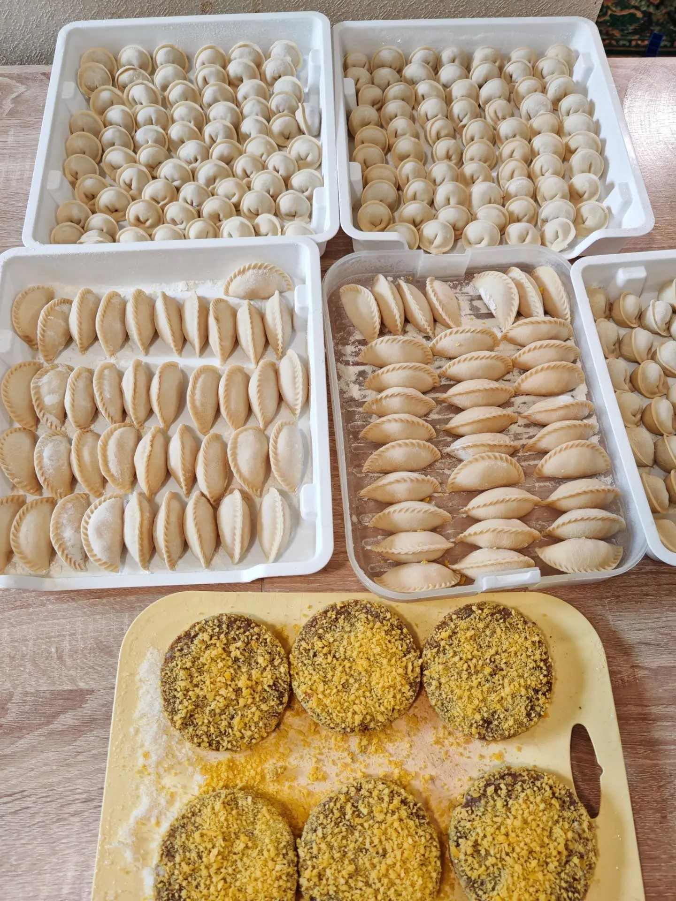
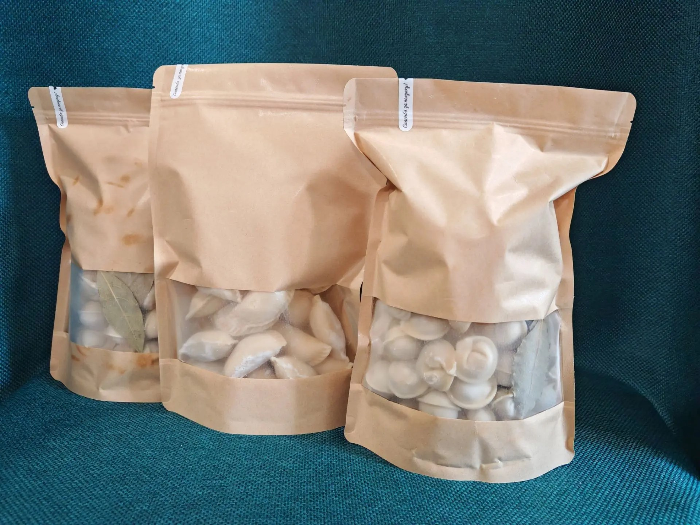
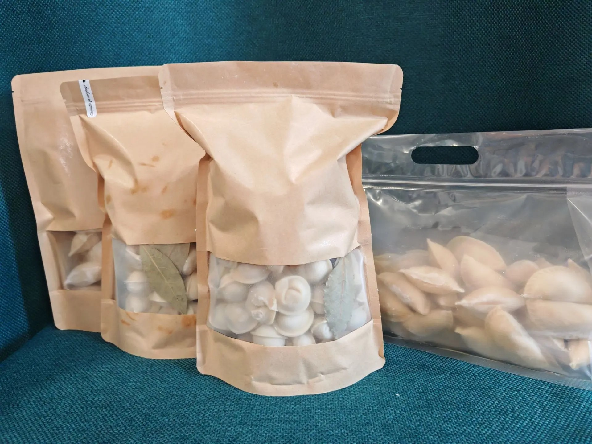

Самовывоз
Забрать заказ можно в СНТ Скоротово, Одинцовский район. Точный адрес (участок/дом) не публикуем на сайте — это частный дом, а не торговая точка — присылаем его при подтверждении заказа в WhatsApp.
от Сашки, с любовью
Домашние пельмени, вареники и мясные заготовки — как лепят в семье, а не на заводе
Всё готовится руками, из свежего мяса, без консервантов и «химии» — и привозится вам в Одинцовском районе так же по-домашнему, как если бы вы заехали за пельменями к бабушке.
Из чего готовим: говядина, свинина, курица — свежие, без заморозки неизвестного происхождения.
Как готовим: вареники и пельмени лепим вручную, а не штампуем машиной — поэтому у них честный, «мамин» вкус и вид.
Как заказать: выбираете блюда и вес в конструкторе ниже — сумма считается сама, а готовый заказ одной кнопкой уходит к нам в WhatsApp.
Выбрать блюда

Готовит здесь Александра — для друзей и клиентов просто Саша. Отсюда и название: «Вкусняшки от Сашки» — это не громкий бренд, а тёплая семейная рифма. Саша — мама троих погодок, и готовить впрок начала как раз для того, чтобы освободить себе немного времени; сейчас, уже больше 5 лет спустя, эта экономия времени достаётся и её клиентам. Всё это время — вручную: никакого конвейера и штампов, пельмени и вареники лепятся руками, партиями ровно на те заказы, которые пришли, — как готовили бы для своей семьи.


Только свежие говядина, свинина и курица — без соевого белка, усилителей вкуса и прочей «начинки», которую обычно не хочется видеть в составе на магазинной пачке. Мясо и овощи уже больше 2 лет закупаются у одних и тех же проверенных продавцов на рынке — у них есть лицензия, так что за свежесть можно быть спокойными. Фарш при этом не покупной: мясо перекручивается самостоятельно, из цельного куска, — как дома, а не как в магазине. Начинки для вареников — картошка с жареным луком, беконом или грибами — тоже готовятся сами, не покупаются готовыми.
Ручная лепка — это не просто красивый аргумент для сайта: тесто и начинка у ручных пельменей и вареников распределяются иначе, чем у машинных, поэтому вкус получается более «домашним» — таким, каким он был у бабушки на кухне, а не в заводской упаковке.
Тем, кто в будни не успевает лепить сам, но не хочет кормить семью магазинными полуфабрикатами с длинным составом. Заказали — и дома есть нормальная домашняя еда, которую нужно просто отварить или обжарить.
«Готовим с любовью — семья Сашки»
Посмотреть менюЗабрать заказ можно в СНТ Скоротово, Одинцовский район. Точный адрес (участок/дом) не публикуем на сайте — это частный дом, а не торговая точка — присылаем его при подтверждении заказа в WhatsApp.
Привозим в Звенигород, Голицыно, Лесной городок, Малые Вязёмы, Большие Вязёмы, КПП Краснознаменск, Одинцово и другие населённые пункты Одинцовского района.
Доставка оплачивается отдельно, за счёт покупателя: от 300 до 600 ₽ — точная стоимость зависит от адреса и уточняется при оформлении заказа.
При заказе от 5000 ₽ доставка — бесплатно.
Принимаем заказы каждый день с 9:00 до 19:00.
Если нужная позиция уже готова и есть в наличии — забрать или получить заказ можно в тот же день. Если что-то нужно долепить под заказ, срок зависит от состава и объёма: обычно просим предупредить за 1–2 дня. Дело не в спешке, а в качестве — свежая продукция после лепки проходит шоковую заморозку, и нам важно, чтобы к вам она пришла правильно подготовленной и такой же вкусной, как только что со стола.
Наличными или переводом — в момент получения заказа (самовывоза или доставки). Онлайн-оплата на сайте не предусмотрена и не нужна.
Каждый заказ уезжает к вам в крафт-пакете с зип-локом и прозрачным окошком — видно, что внутри, а закрывается пакет герметично, так что до самовывоза или доставки всё доезжает аккуратным и в порядке. Сверху — стикер «Спасибо за покупку»: небольшой тёплый привет от нас каждому, кто выбрал «Вкусняшки от Сашки».




Фото и видео упаковки заказчица будет добавлять сюда сама — просто положите файлы upakovka-1.jpg, upakovka-2.jpg и так далее в assets/images/ (см. assets/images/README.md).
Быстрее всего — в WhatsApp: +7 916 823 28 24. Туда же можно просто отправить заказ из конструктора выше одной кнопкой, а можно написать своими словами, если есть вопрос до заказа (например, про большой заказ на праздник или уточнить наличие).
Если хотите узнавать о новых блюдах и позициях меню — загляните в наш канал в MAX.
Аккаунты в Instagram и Telegram сейчас оформляем — как только будут готовы, ссылки появятся прямо здесь.
Принимаем сообщения и заказы каждый день с 9:00 до 19:00.
Самовывоз — СНТ Скоротово, Одинцовский район. Точный адрес присылаем при подтверждении заказа в WhatsApp.
Пока пусто — выбирайте, что приготовить 🍲
Как получить заказ
СНТ Скоротово, Одинцовский р-н. Точный адрес пришлём в WhatsApp при подтверждении заказа.
Доставка 300–600 ₽ в зависимости от адреса, оплачивается отдельно, за счёт покупателя. Точную стоимость уточним при оформлении.
Возим сюда:
Выберите хотя бы одно блюдо, чтобы отправить заказ
Текст заказа скопирован ✓ — вставьте его в Instagram, VK или MAX
Наш канал в MAXИтого по позиции:
Итого по позиции:
Итого по позиции: